上个月我分享过一篇 Hermes 多 Agent 管理，有好评也有讽刺，在我看来有争议才是好事，都是流量。
最近 Hermes 更新后，出了一个 Kanban 的功能。做过敏捷开发的同学应该秒懂——每天站会盯着那块白板，谁的卡片卡在哪一列，一眼就知道。
但这个 Kanban 可不是给人用的。
移动卡片的不是人，是 Agent。状态流转、失败重试、Agent 交接——全自动。思路跟之前一样，不让一个 Agent 干所有的事，把大任务拆小，分给不同角色，各干各的。
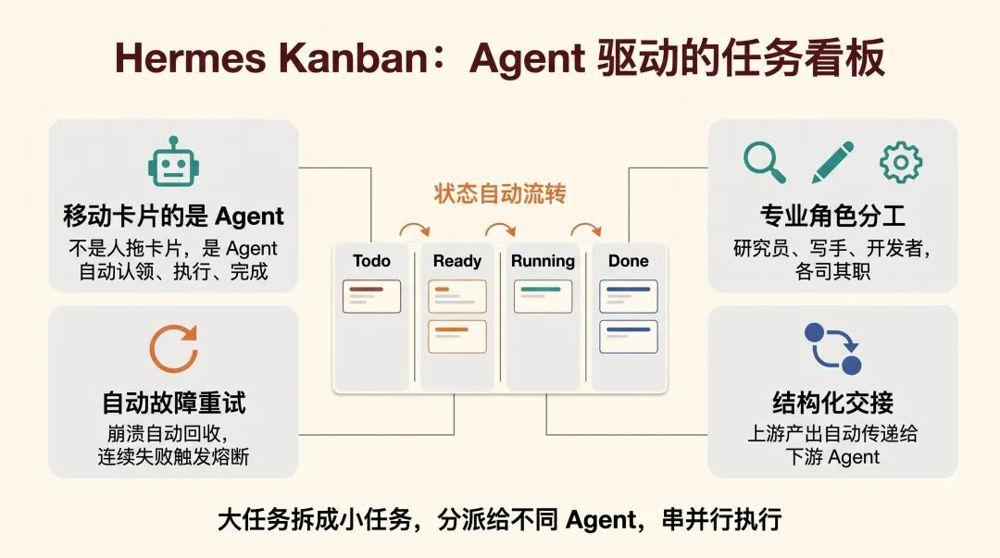
上一篇我提过，协作是能力的放大器，不是补丁。放到 Kanban 里也一样。
说实话这个操作，真的有点像团队里项目经理拆完需求，往看板上一贴，各人领各人的活。
只不过这次领活的全是 AI。
两个入口，同一块看板
Hermes Kanban 有两套操作方式：Agent 那边通过内置的工具函数（kanban_create、kanban_complete、kanban_block 等）自动驱动看板；你这边通过 hermes kanban ... 命令行或者 /kanban 斜杠命令来操作。
两套入口读写的是同一个 kanban.db，数据完全一致——Agent 在里面干活，你在外面看进度、留言、解除阻塞，互不冲突。
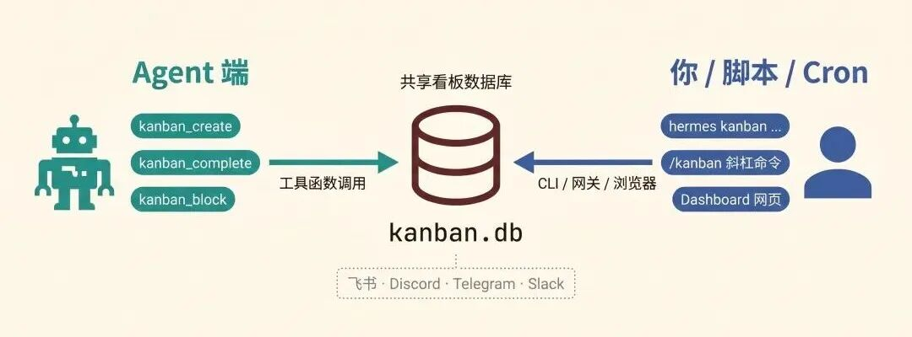
飞书、Discord、Telegram 这些网关里也能直接用 /kanban list、/kanban create 操作看板，不用切到终端。
如果你用过飞书的话，想象一下，你在飞书群里发一句 /kanban create "写一篇Kanban教程" --assignee writer，然后切到浏览器看 Dashboard，任务已经在看板上了，Agent 正在认领、执行。这个体感，跟你在飞书里给同事派活没什么区别。
从零开始：先跑通一个最简单的任务
别着急搞什么多 Agent 并行、任务依赖链。我们先从最基础的开始：创建一个任务，让一个 Agent 把它做完。
第一步：准备 Profile
Hermes 里的 Profile 就是你给 Agent 准备的"岗位说明书"。你想让它干什么活，就给它配什么身份。
如果你还没创建过 Profile，先建几个常用的：
hermes profiles create researcher # 调研员
hermes profiles create writer # 写手
hermes profiles create coder # 开发者
hermes profiles create video-worker # 视频创作者每个 Profile 可以配自己的技能（Skills）、工具（Tools）和记忆（Memory）。这不是今天的重点，知道有这回事就行。
第二步：初始化 Kanban + 启动网关
hermes kanban init # 创建 kanban.db（其实这步可以省，第一次跑任何 kanban 命令都会自动初始化）
hermes gateway start # 启动网关，里面内置了 Dispatcher（调度器）Dispatcher 你可以理解成一个"工头"。它每隔 60 秒扫一遍看板，看看有没有 Ready 状态的任务，有的话就分配给对应的 Agent 去干。Agent 崩了、超时了，它也负责回收和重新分配。
hermes dashboard # 打开浏览器看看 Kanban 长什么样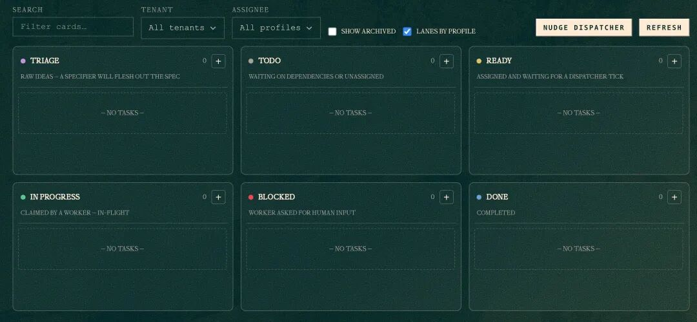
六列状态从左到右：Triage（待梳理）→ Todo（待办）→ Ready（就绪）→ In Progress（进行中）→ Blocked（阻塞）→ Done（完成）。
第三步：创建一个任务
hermes kanban create "make a video about kanban" \
--assignee video-worker \
--tenant video-pipeline这条命令做了三件事：
- 1.在看板上新建了一张卡片
- 2.指定 video-worker 这个 Profile 来干活
- 3.用 --tenant 给任务打了个标签，方便按项目筛选
跑完之后，Dispatcher 下一次扫描（最多等 60 秒）就会把这个任务分配给 video-worker，然后自动启动一个 Agent 进程来执行。
你也可以点 Dashboard 上的"Nudge dispatcher"按钮，让它立刻调度，不用等。
如果任务被 Blocked 了
新手最容易在这里懵。你兴高采烈地创建了任务，结果一看状态——blocked。
hermes kanban list
Board: default (1 other board — `hermes kanban boards list`)
⊘ t_058c4d9c blocked video-worker [video-pipeline] make a video about kanban别慌，Blocked 不是报错，是 Agent 在等你的输入。
我只说了"make a video about kanban"，Agent 不知道要什么角度、多长、给谁看，它就主动 Block 自己，在评论区留下了问题。
用 context 命令看看它到底在问什么：
hermes kanban context t_058c4d9c输出大概长这样：
hermes kanbancontextt_058c4d9c
# Kanban task t_058c4d9c: make a video about kanban
Assignee:video-worker
Status: blocked
Tenant: video-pipeline
Workspace:scratch@/Users/<USERNAME>/.hermes/kanban/workspaces/t_058c4d9c
## Prior attempts on this task
### Attempt 1 — blocked (video-worker, 2026-05-10 20:59)
"make a video about kanban"—need spec:whatangle(intro/tips/comparison/tutorial)?duration?audiencelevel?existingsourcematerial?isthereanarticleorblogposttoconvert,orstartfrom scratch?"Agent 问得挺具体的：什么角度？多长？受众什么水平？有没有现成素材？
回答它：
hermes kanban comment t_058c4d9c "做一个入门教程视频，时长1分钟左右，受众是完全不懂kanban的小白，基于我们之前的讨论内容来讲"再解除阻塞：
hermes kanban unblock t_058c4d9cDispatcher 会重新调度这个任务，@video-worker 拿到你的回答后继续工作。
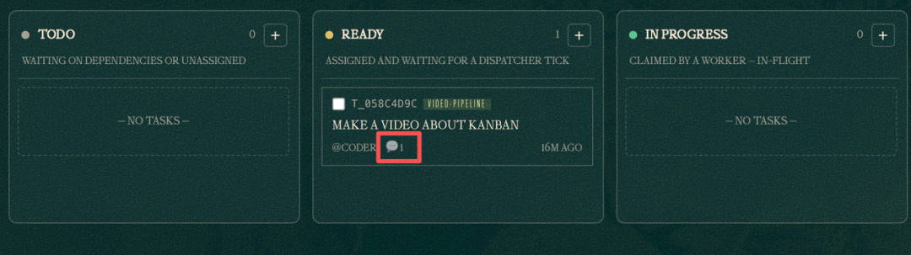
踩坑提醒：comment 和 unblock 是两步操作，别忘了 unblock。光留言不解除阻塞，任务是不会动的。
整个流程用一张表总结：
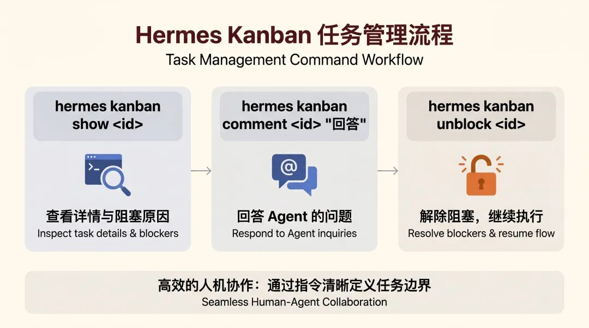
跑通这个基本流程，Hermes Kanban 你就已经能上手干活了。
进阶：一句话，让 Agent 自己拆任务
上篇文章发出来后，评论区问得最多的一个问题：能不能在飞书里搞？
当时那篇讲的多 Agent 协作，要在 Discord 里配群组、配 bot、调 @mention，流程确实绕。不少人看完觉得"东西是好东西，但我团队用飞书啊"。
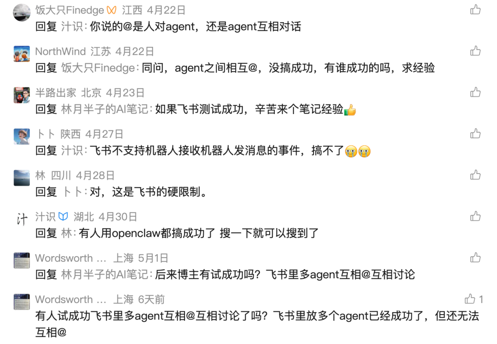
现在有了 Kanban，不用那么复杂了。你在飞书里发一句话，Agent 自己拆、自己跑、自己交接。
不用配 Discord 群组，不用调 bot 权限，不用管 @mention 那些坑。
前面的例子是你手动创建一个任务，Agent 来执行。
但任务复杂了怎么办？
比如"做一个 90 秒的 Hermes 介绍视频"——这明显不是一个 Agent 能搞定的，你得有人调研、有人写脚本、有人生成视频。
手动拆？可以，但累。
有了 Kanban，之前那套复杂的 IM 机器人配置直接省了，变成"对话即工作流"。
你只需要在飞书里说一句话：
创建一个 Hermes Agent 功能介绍视频的任务，分配给 researcher 调研核心功能亮点，再让 writer 写视频脚本，最后让 video-worker 生成 90 秒横版视频。
Agent 收到后，自动拆成这样：
T1 t_f3021692 [researcher] 调研 Hermes Agent 核心功能亮点 ✅ ready
↓
T2 t_391e4acc [writer] 撰写 90 秒中文视频脚本 ⏳ 等待 T1
↓
T3 t_8ca0e4dc [video-worker] 生成 90 秒横版视频 ⏳ 等待 T2T1 跑完后 T2 自动变成 Ready，T2 完成后 T3 接上。全程不需要你介入。
你在飞书里当甩手掌柜，Agent 在后台卷生卷死。
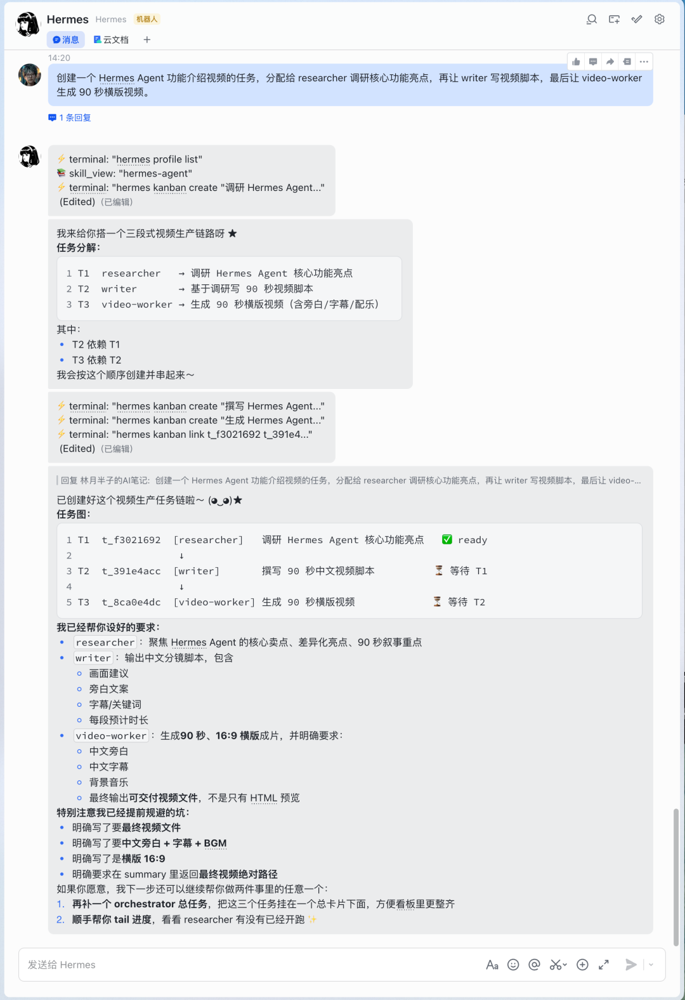
整个过程不需要写一行命令，不需要手动指定 --parent，不需要管依赖关系——orchestrator 自己判断、自己建、自己跑。
这就是 Kanban 里 orchestrator 角色在干的事。你给它一个目标，它自动拆子任务、建依赖、分配 Agent。你在飞书里聊天就能驱动多 Agent 协作，跟给同事派活一样。
Dashboard 里也能实时看到每个子任务的状态，哪个在跑、哪个在等、哪个卡住了。
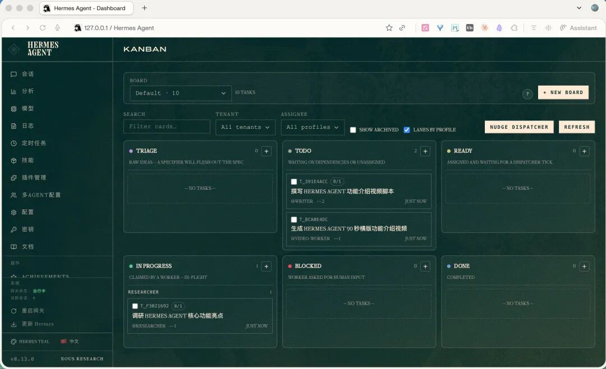
喜欢终端的话，hermes kanban watch 也能实时看任务的生命周期——created → linked → claimed → spawned → completed，每一步都有日志。
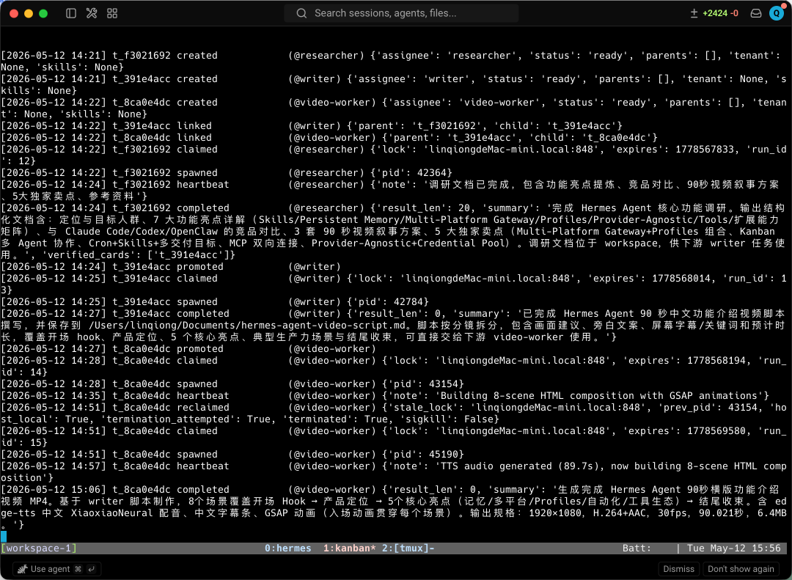
最终 video-worker 产出的视频长这样：
当然，学习阶段你想精确控制每一步，也可以自己手动创建任务链：
# 第一步
T1=$(hermes kanban create "调研 Hermes 核心功能" \
--assignee researcher --tenant video-pipeline --json | jq -r .id)
# 第二步，依赖 T1
T2=$(hermes kanban create "写视频脚本" \
--assignee writer --tenant video-pipeline \
--parent $T1 --json | jq -r .id)
# 第三步，依赖 T2
hermes kanban create "生成视频 mp4" \
--assignee video-worker --tenant video-pipeline \
--parent $T2两种模式的区别看这张图：
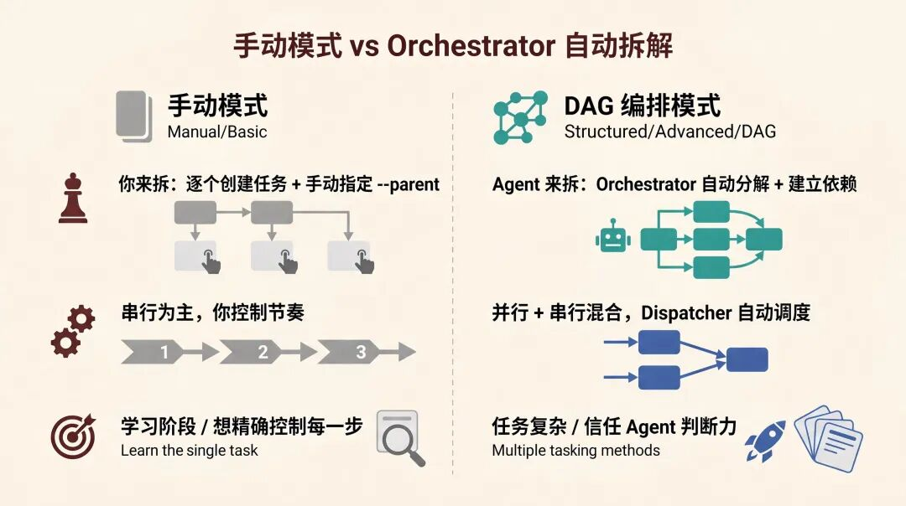
到这里，单个看板上的玩法就讲完了——从手动建单任务，到 Orchestrator 一句话自动拆，入门到进阶的主要场景都覆盖了。
但如果你跟我一样，同时在做公众号内容、客户项目、日常杂事，全堆在一个 default 看板上，任务一多就眼花。
Boards：一个项目一块看板
Hermes Kanban 支持多看板（Boards），每个 Board 的数据库、工作空间、调度器完全隔离。
下面这张图一看就懂：
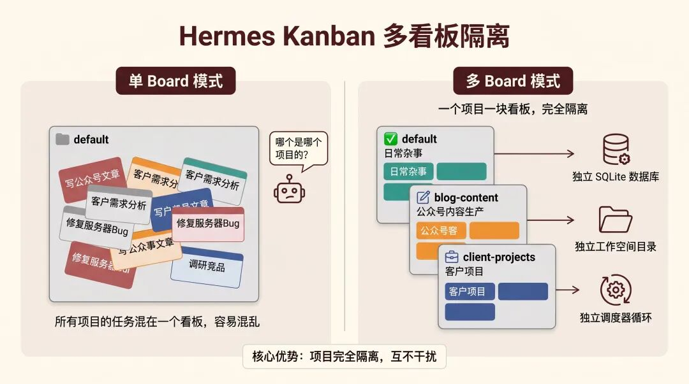
操作也简单：
hermes kanban boards create blog-content # 新建一个叫 blog-content 的看板
hermes kanban boards switch blog-content # 切到这个看板
hermes kanban boards list # 看看有哪些看板
hermes kanban boards show # 当前在哪个看板切到某个 Board 后，你所有的 hermes kanban 命令都只操作那个 Board，不影响其他的。
也可以不切换，直接用 --board 参数操作指定看板：
hermes kanban --board blog-content list
hermes kanban --board client-projects create "做客户项目需求分析" --assignee researcher对比一下：
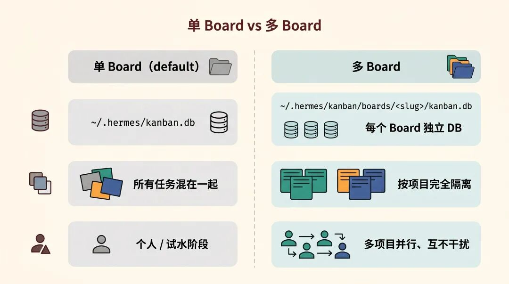
Boards 就是干这件事的：一个项目一块看板，互不干扰。
底下跑的是什么？聊聊核心机制
前面讲的都是怎么用，这里说说为什么跑得动。
整套系统围绕本地 SQLite 数据库转。每次 Agent 认领任务是原子事务——多个 Agent 竞争同一个任务时，只有一个能拿到，不会出现两个 Agent 同时干同一件事。
Agent 崩了？
Dispatcher 通过进程存活检测（kill(pid, 0)）自动发现，回收任务，重新分配。
连续失败三次还触发熔断，任务自动锁定等人工介入，不会让看板空转。
任务之间可以建父子依赖。
上游完成后的摘要和元数据自动传给下游 Agent。
T2（写脚本）能知道 T1（调研）发现了什么——不是靠"翻聊天记录"，是结构化的数据交接。
拿我们刚跑的视频任务来说，hermes kanban show t_391e4acc 能看到 T2 的完整信息：
Task t_391e4acc: 撰写 Hermes Agent 功能介绍视频脚本
status: done
assignee: writer
parents: t_f3021692
children: t_8ca0e4dc
Body:
请根据 researcher 的调研结果，撰写一份 Hermes Agent 功能介绍视频脚本...
上游调研任务 workspace 路径: ~/.hermes/kanban/workspaces/t_f3021692/Kanban 里每个任务有自己独立的 workspace 目录。
T1（researcher）跑完后，调研文档、notes、summary 都落在自己的 workspace 里。
T2 的 body 里写了上游 workspace 路径——writer 启动后直接去那个目录读文件，拿到 T1 的全部产出。
T1 完成时还会写一个 summary，说自己做了什么、产出了哪些文件、关键结论。
下游 Agent 同时看两样东西：T1 的 summary（快速了解全貌）和 T1 workspace 里的实际文件（拿具体内容）。
这就是 Kanban 的传参方式——文件式交接 + 任务状态推进，不是共享上下文。
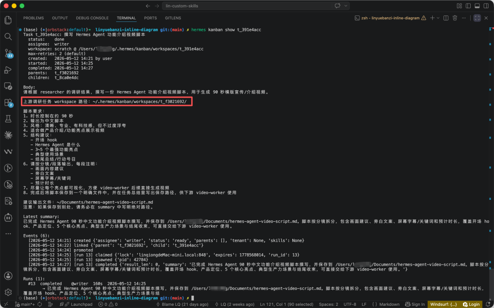
官方文档里列了一些协作模式，挑几个常用的：
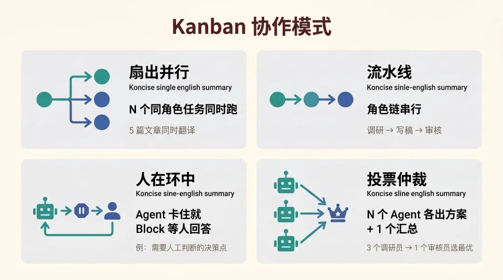
Web Dashboard 通过 WebSocket 实时推送事件，不用刷新页面就能看到任务状态变化。
跟 delegate_task 有什么区别？
如果你之前用过 Hermes 的 delegate_task（子 Agent 委派），可能会想：这跟 Kanban 有什么不一样？
一句话：delegate_task 是函数调用，Kanban 是工作队列。
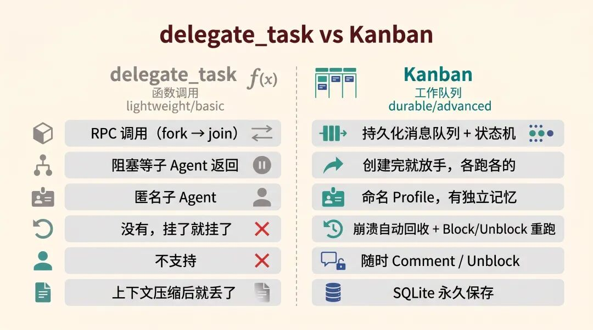
要一个快速的问答结果，用 delegate_task。
跨 Agent 的、需要人工介入的、要活过重启的复杂任务，用 Kanban。
两者可以共存——一个 Kanban Worker 执行任务的过程中，内部完全可以用 delegate_task 去问另一个 Agent 一个小问题。
写在最后
多 Agent 协作这件事，之前总觉得"演示看着酷，真用起来不太行"。
以前搞多 Agent，要么是一个 Agent 内部疯狂调子 Agent，上下文越来越乱；要么是多个 Agent 各跑各的，没有统一的地方看进度。
Kanban 把任务拆解、分配、执行、交接、失败重试、人工介入这些事情拉到了一个看板上。
打开 Dashboard 就能看到所有 Agent 在干什么、卡在哪、产出了什么。
如果你之前看过我那篇 Hermes 多 Agent 的文章，这篇算是它的实战升级版。
建议先从最简单的单任务跑起来，跑通了再试任务链，最后再玩 Orchestrator 自治拆解。
加入社群
我平时主要折腾 n8n 自动化、OpenClaw 和各种 AI Agent 实战，群里经常有人分享踩坑经验、工作流配置和新工具的第一手体验。
遇到问题群里问，看完文章群里聊。点击下方加入，一起搞。
如果觉得不错，随手点个「赞」和「在看」，转发给需要的朋友吧～ 第一时间收到推送，记得给我个星标⭐